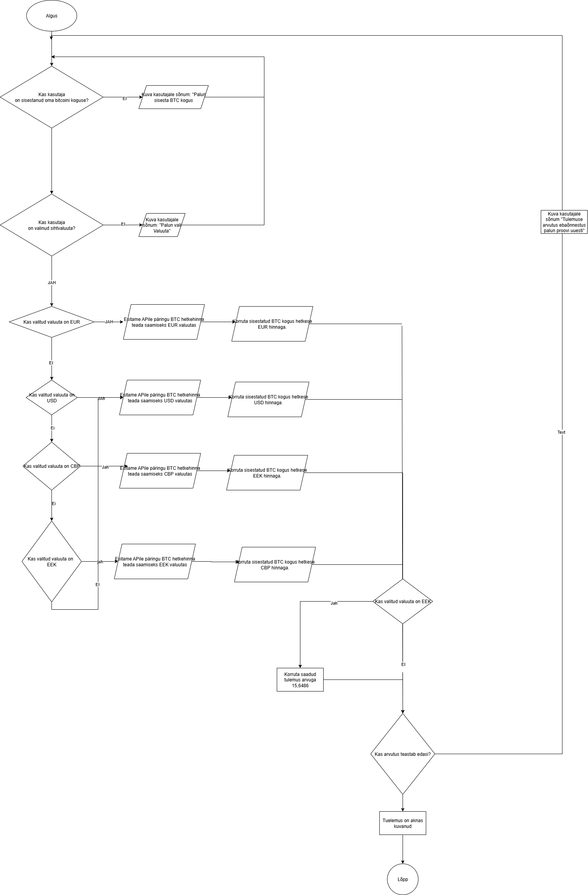

Vooskeem ehk Flowchart on visuaalne diagramm, mis kirjeldab protsessi või algoritmi
samm-sammult standardsete kujundite abil. UML-i kontekstis tähistatakse sarnast vaadet
sageli kui Activity Diagrammi, mis keskendub tegevuste ja juhtimisvoo kirjeldamisele.
Sama vooskeemi kasutasime Bitcoini kalkulaatori loomisel.
